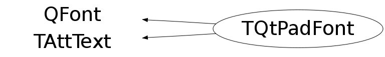

class TQtPadFont: public QFont, public TAttText
Function Members (Methods)
public:
| TQtPadFont() | |
| TQtPadFont(const TQtPadFont& src) | |
| virtual | ~TQtPadFont() |
| static const char* | ArialFontName() |
| static TClass* | Class() |
| void | TAttText::Copy(TAttText& atttext) const |
| static const char* | CourierFontName() |
| virtual Short_t | TAttText::GetTextAlign() const |
| virtual Float_t | TAttText::GetTextAngle() const |
| virtual Color_t | TAttText::GetTextColor() const |
| virtual Font_t | TAttText::GetTextFont() const |
| virtual Float_t | TAttText::GetTextSize() const |
| virtual TClass* | IsA() const |
| virtual void | TAttText::Modify() |
| TQtPadFont& | operator=(const TQtPadFont&) |
| virtual void | TAttText::ResetAttText(Option_t* toption = "") |
| static const char* | RomanFontName() |
| virtual void | TAttText::SaveTextAttributes(ostream& out, const char* name, Int_t alidef = 12, Float_t angdef = 0, Int_t coldef = 1, Int_t fondef = 61, Float_t sizdef = 1) |
| static void | SetSymbolFontFamily(const char* symbolFnName = "Symbol") |
| virtual void | TAttText::SetTextAlign(Short_t align = 11) |
| virtual void | TAttText::SetTextAngle(Float_t tangle = 0)MENU |
| virtual void | TAttText::SetTextAttributes()MENU |
| virtual void | TAttText::SetTextColor(Color_t tcolor = 1) |
| virtual void | SetTextFont(Font_t fontnumber = 62) |
| void | SetTextFont(const char* fontname, int italic, int bold) |
| void | SetTextMagnify(Float_t mgn) |
| virtual void | SetTextSize(Float_t textsize = 1) |
| virtual void | SetTextSizePixels(Int_t npixels) |
| virtual void | ShowMembers(TMemberInspector& insp) |
| virtual void | Streamer(TBuffer& b) |
| void | StreamerNVirtual(TBuffer& b) |
| static const char* | SymbolFontFamily() |
Data Members
protected:
| Short_t | TAttText::fTextAlign | Text alignment |
| Float_t | TAttText::fTextAngle | Text angle |
| Color_t | TAttText::fTextColor | Text color index |
| Font_t | TAttText::fTextFont | Text font number |
| Float_t | TAttText::fTextSize | Text size |
Class Charts
{kind=link}
{kind=link}
{kind=link}
{kind=link}

Function documentation
void SetTextFont(const char* fontname, int italic, int bold)
void SetTextFont(Font_t fontnumber = 62)
void SetTextSize(Float_t textsize = 1)
void SetTextSizePixels(Int_t npixels)
void SetTextMagnify(Float_t mgn)
const char * RomanFontName()
const char * ArialFontName()
const char * CourierFontName()
const char * SymbolFontFamily()
void SetSymbolFontFamily(const char* symbolFnName = "Symbol")